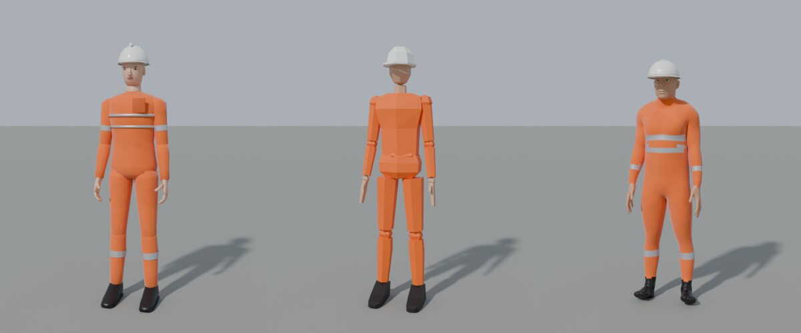
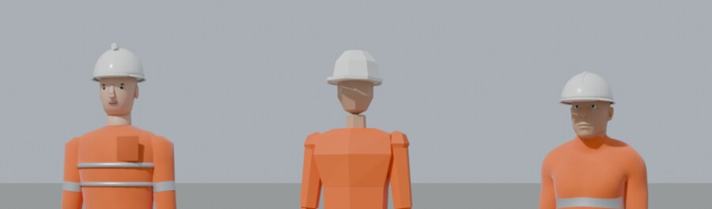
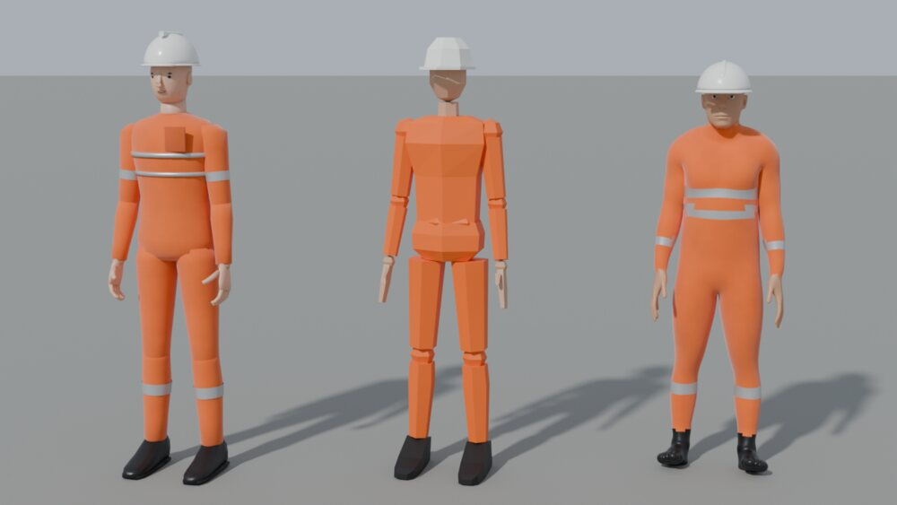
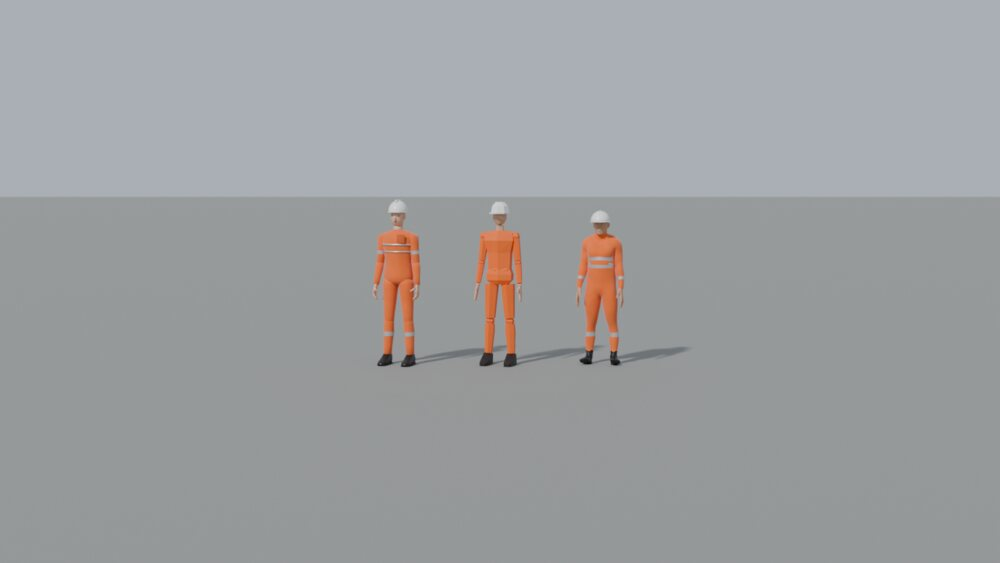
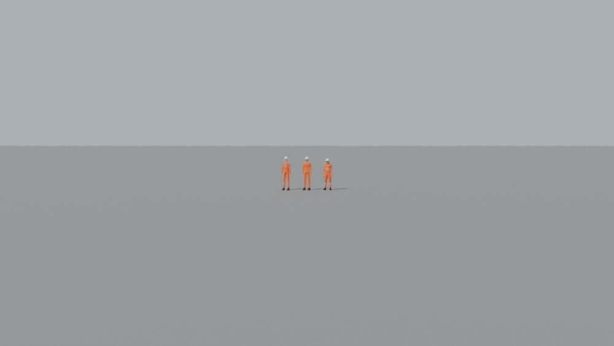
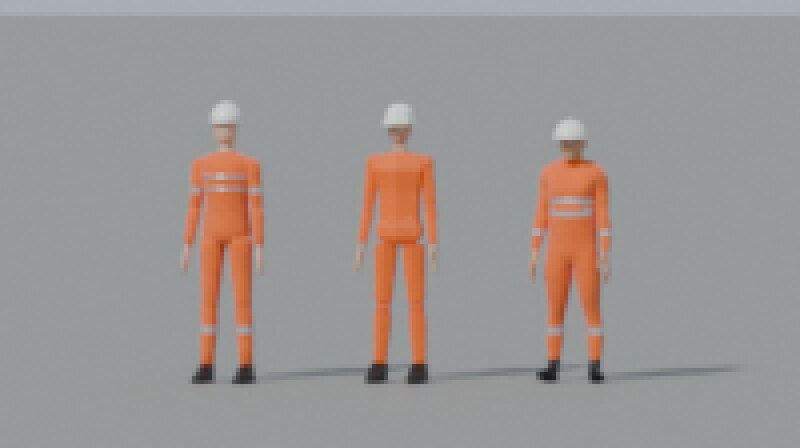
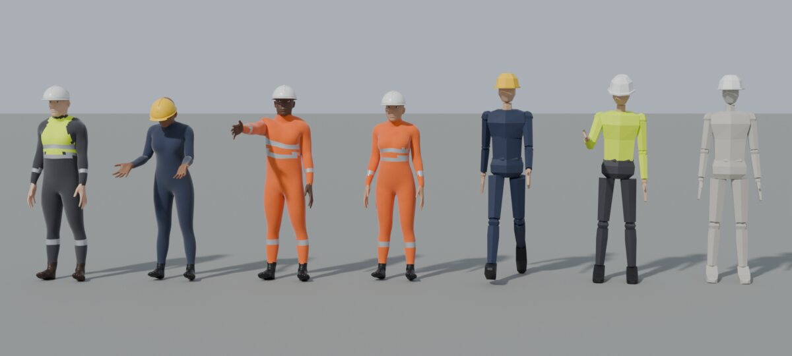

People in two more looks: low poly and realistic (study 0303)
- Low poly: a wooden-mannequin figure made in code, 1,016 triangles (today: 6,780 near, 2,248 far), 0.09 MB, no licence question. 40 of them cost +1.7 s and +16 MB over an empty scene.
- Realistic: Blender Studio's Human Base Meshes (scanned male and female bodies, CC0 – checked in the files themselves and at the source), re-weighted to our rig in about a second, dressed in the app's outfits and a hard hat. 25,000 triangles, 99,700 with the smoothing at render. One person renders as fast as today's; 40 of them need +2.9 GB with the smoothing on, +0.26 GB without: it must give way to the low-poly figure at a distance.
- What the realistic route still needs: fingers that grip (carrying, tool change), real clothes shapes (today the coverall is the body pushed out 9–14 mm: it reads as a tight suit), a face made generic (the scan's face is smoothed, still a real face).
1 · The look sheet
Real renders, Cycles on the processor (web machine, 4 cores, no graphics card), 64 samples, one sun, grey floor. Left to right: today (task 0155, Offshore), low poly, realistic (male body, Offshore). The same lens at 5 m, 15 m and 45 m. Today's person switches to its light level beyond 30 m, as in the app (Light beyond = 30 m).






core/people.py (Walk gait, a turn at the start), each look on its own armature with the same pose per frame.
800 × 450, 24 samples, 4.8 s a frame.
2 · Numbers (measured)
Web machine, 4 cores, no graphics card. "Saved" = the person's object, mesh, weights and armature written to a compressed .blend (materials left out). "40 people": 8 × 5 people of one look 1.4 m apart, four poses, the camera 25 m away, 960 × 540, 64 samples; time and peak memory of the whole run against the same scene with nobody in it.
| Look | Triangles | Saved | One person, close (640 × 800) | 40 people: render | 40 people: peak memory |
|---|---|---|---|---|---|
| Nobody (the scene alone) | – | – | – | 10.5 s | 816 MB |
| Low poly | 1,016 | 0.09 MB | 11.2 s | 12.2 s (+1.7) | 832 MB (+16) |
| Today, light level | 2,248 | 0.13 MB | 14.1 s | 14.2 s (+3.7) | 870 MB (+54) |
| Today, detailed | 6,780 | 0.21 MB | 14.3 s | 14.2 s (+3.7) | 914 MB (+98) |
| Realistic, no smoothing | 24,856 | 0.64 MB | – | 15.0 s (+4.5) | 1,078 MB (+262) |
| Realistic, smoothing 1 at render | 99,688 | 0.64 MB | 11.9–14.8 s | 20.3 s (+9.8) | 3,752 MB (+2,936) |
One person close up takes 11–15 s for every look (two runs of the realistic one: 14.8 and 11.9 s): the picture's pixels set the time, not the person. The difference shows with many people: the smoothed realistic body costs about 73 MB per person while rendering. On your RTX 3090 (24 GB) that would be roughly 300 people – worked out from this machine, not measured on a graphics card. Making 40 realistic people took 30 s in the prototype (its face smoothing runs in plain Python per person); a build stores the finished body once.
3 · How each look fits the rig of task 0157
| Low poly | Realistic (Human Base Meshes) | |
|---|---|---|
| Skeleton | the same 17 bones; every piece on ONE bone (ball joints hide the gaps, nothing stretches) | the same 17 bones: fitted once to the scan's A-pose (17 points per body, picked from its shape), Blender's automatic weights (1.2 s per body with Blender's start, all 10,582 points weighted), then turned into the rig's rest pose. No retarget at run time. |
| Walk paths, 5 gaits, actions, IK | work (the walk clip) | work (the walk clip) |
| Carrying, hands | mitten hands: a grip = a closed mitten (no finger keys needed) | the scan's hands stay open: the rig's six finger shape keys (open / grip / point per hand) must be made for it – task C |
| Tool change (0156) close up | possible, looks like a mannequin | needs task C |
| Clash check, live preview | the lightest body: could stand in for every look (task G) | 25,000 triangles moved along the path; use the low-poly body (task G) |
| Far away | is its own far level | give way to the low-poly figure beyond 30 m (the "FR prop detail" switch that today's person already has) |
| Web 3D page | 1,016 triangles: tens of people cost nothing | about 0.7 MB per person worked out from its point count (not measured): only a few |
4 · Sources and licences
The app is GPL-3.0-or-later in a public repository and is installed in companies: an asset must allow being committed, shipped and used commercially. Checked how: "in the file" = read in the downloaded file itself; "GH" = the licence file read on GitHub; "search" = the source page read through a search tool, because this machine's network refuses those sites – check again before a build.
| Source | Licence | For us | Checked | Notes |
|---|---|---|---|---|
| Blender Studio Human Base Meshes v1.4.1 (download.blender.org, studio page) | CC0 | ship + commit | in the file: every asset's licence field says CC0 (authors Dan Ulrich, Julien Kaspar, Paul Kotelevets, Tonatiuh de San Julián); studio page: search | 50 MB bundle; realistic male/female bodies from scan data (10,582 points, multires 3 levels, UVs), stylised bodies, heads, hands, feet, eyes; no rig, no shape keys. Used in this study. |
| MPFB 2 / MakeHuman (LICENSE.md) | code GPL-3; system assets CC0; exports unrestricted | ship CC0 assets | GH (some community packs are CC-BY: search) | rigs of 163 / 137 / 53 / 31 bones, clothes, skins, body shapes as targets. Its asset site is refused here, so nothing was tried (task H). |
| Mesh2Motion (assets) | models, rigs, animations CC0; code MIT | ship | GH | where the animations came from is not stated |
| Kenney (support page) | CC0 | ship | search | toy-like game characters: not a work look |
| CMU motion capture (mocap.cs.cmu.edu) | free, "may include in commercially-sold products" | likely ship | search, secondary copies disagree | only needed if a later task wants captured motion; today's walk is worked out in code |
| Quaternius (licence) | pages say CC0; the Quaternius Asset License forbids redistributing the assets as assets | unclear: not in a public repository | search | |
| Mixamo (Adobe) | Adobe terms: raw files may not be redistributed | no | search (community copy of the FAQ) | a user's own download for own renders is allowed |
| Epic MetaHuman | Epic content licence, Unreal Engine | no | search | |
| Reallusion Character Creator / ActorCore | paid; no distribution | no | search | |
| Human Generator | paid asset licence; exported models may not be shared | no | search | |
| SMPL / SMPL-X | non-commercial research | no | GH | |
| Bandai Namco motion dataset | CC BY-NC 4.0 | no | GH | |
| Poly Haven / ambientCG | CC0 | ship | search | rubber boots and a life jacket on Poly Haven; no hard hat, no hi-vis vest found |
| Sketchfab hard hats / safety shoe | CC-BY 4.0 | ship with credit | search | 2,400–2,800 triangles; one vest there is AI-made and some scans are non-commercial: avoid. The PPE is simple enough to make in code (task D). |
| Rigify human metarig (in Blender) | GPL-2.0-or-later | compatible | GH | 159 bones; not needed: our 17-bone rig stays |
A point for the owner: the realistic bodies are scans of real people. The licence allows everything, but the app's own rule (0155) is "a face without a likeness". The prototype smooths the scan's face; it still reads as a real face (heads picture). Task B makes the face generic (more smoothing, a non-scan head of the same bundle, or safety glasses and a hard hat always on near the camera).
5 · Work clothes and PPE
Nothing ready-made fits all of hard hat, hi-vis vest, coverall, safety boots and offshore suit under a shipping licence (above). The prototype shows the cheap way: the clothes are the body's own surface pushed out (coverall 9–14 mm, boots 8 mm), coloured per region, with reflective bands and a hi-vis vest as regions, and a hard hat made in code (shell, brim, peak, ridge). It works at 5 m and beyond; close up the coverall reads as a tight suit and the bands are ragged where they cross the chest. A build makes: boots with a toe cap and sole around the foot (today's shoe shape), the vest as its own shell with bands round and over the shoulders (EN ISO 20471 look), gloves, safety glasses, ear defenders, and folds as a normal map (task F).
6 · Build tasks – tick what you want
Low-poly look and a Look choice work M · Opus · Medium · props / people lane (props_detail, props_scale, person_rig)
The mannequin of this study in the app: a Look choice in the person's settings (Today / Low poly / Realistic once B is in), outfit colours and helmet on it, a "plain mannequin" option; the web 3D export uses it for people; test tour stop, PC-check line.
Gain: crowds on big scenes and the web page for nothing (40 people: +1.7 s, +16 MB). Small: the prototype is about 170 lines.
Realistic look from Blender Studio's CC0 bodies work L · Opus · High · props / people lane · after A
A maker tool (developer side) downloads the bundle from download.blender.org, fits the 17 bones, weights, poses to the rest pose, makes the face generic and writes two small files (male, female: ~0.6 MB each) into the app; licence in THIRD-PARTY-NOTICES. In the app: dressed per outfit, hard hat, heights 1.65 / 1.75 / 1.85, the four skins, smoothing at render, the low-poly figure beyond 30 m.
Gain: people that read as people in close shots and stills. Cost: memory with many people near the camera (table above).
Hands that grip on the realistic body work M · Opus · High · after B
15 finger joints fitted per hand once, the rig's six finger shape keys (open, grip, point per hand) made from them, so carrying (0157) and the tool change (0156) work as with today's person.
Without it the realistic person carries a toolbox with open hands.
PPE set for all looks work M · Opus · Medium · after B
Hard hat (with chin strap), hi-vis vest with bands round and over the shoulders, coverall, offshore suit, safety boots with toe cap and sole, gloves, safety glasses, ear defenders – ticks in the person's settings; made in code, no outside files; colour blocks on the low-poly look.
Gain: the owner's "work clothes and PPE" for offshore and workshop pictures.
Body variety work S–M · Sonnet · Medium · after B
Build slim / average / heavy as a shape on both bodies, short hair when no helmet, a random mix button for a group of people.
Male, female, three heights and four skins come with B already (variety picture).
Cloth folds work M · Opus · High · after B and D
Folds at elbows, knees, waist and back as a normal map per outfit, made once from a cloth simulation; loose trouser legs over the boots.
Takes away the "tight suit" look close up. Not needed at 15 m and beyond.
The light body for the clash check and the live preview work S · Opus · Medium · after A
Every look is checked and previewed with the low-poly body (1,016 triangles) instead of its own mesh (6,780 today, 24,856 realistic).
Keeps the clash check and posing as fast as today when realistic people come in.
Bring your own figure (MakeHuman / MPFB) work M · Opus · Medium · later
A figure the user made himself in MPFB (CC0 system assets) imported with its 53-bone game rig mapped onto our 17 bones by name.
Not tried: MakeHuman's asset site is refused on this machine. More choice of faces, bodies and clothes, at the cost of a second way of making people.
Pictures and clip: tasks/0303_page/img; numbers: tasks/0303_page/numbers.json; the scripts that made them: tasks/0303_proto/ on the branch task/0303-study-people-looks (lowpoly.py, realistic.py, weights_bpy.py, export_hbm.py, render_sheet.py). The Human Base Meshes bundle itself is not in the repository.